Last updated: 2019-12-13
Checks: 6 1
Knit directory: SMF/
This reproducible R Markdown analysis was created with workflowr (version 1.5.0). The Checks tab describes the reproducibility checks that were applied when the results were created. The Past versions tab lists the development history.
Great! Since the R Markdown file has been committed to the Git repository, you know the exact version of the code that produced these results.
Great job! The global environment was empty. Objects defined in the global environment can affect the analysis in your R Markdown file in unknown ways. For reproduciblity it’s best to always run the code in an empty environment.
The command set.seed(20190719) was run prior to running the code in the R Markdown file. Setting a seed ensures that any results that rely on randomness, e.g. subsampling or permutations, are reproducible.
Great job! Recording the operating system, R version, and package versions is critical for reproducibility.
Nice! There were no cached chunks for this analysis, so you can be confident that you successfully produced the results during this run.
Using absolute paths to the files within your workflowr project makes it difficult for you and others to run your code on a different machine. Change the absolute path(s) below to the suggested relative path(s) to make your code more reproducible.
| absolute | relative |
|---|---|
| ~/SMF/data/RPS13_NMF_mkl_lee_K3.RData | data/RPS13_NMF_mkl_lee_K3.RData |
| ~/SMF/data/RPS13_stm_bmsm_K3.RData | data/RPS13_stm_bmsm_K3.RData |
| ~/SMF/data/RPS13_stm_nugget_K3.RData | data/RPS13_stm_nugget_K3.RData |
| ~/SMF/data/GPX3_NMF_mkl_lee_K3.RData | data/GPX3_NMF_mkl_lee_K3.RData |
| ~/SMF/data/GPX3_stm_bmsm_K3.RData | data/GPX3_stm_bmsm_K3.RData |
| ~/SMF/data/GPX3_stm_nugget_K3.RData | data/GPX3_stm_nugget_K3.RData |
| ~/SMF/data/PSAP_NMF_mkl_lee_K3.RData | data/PSAP_NMF_mkl_lee_K3.RData |
| ~/SMF/data/PSAP_stm_nugget_K3.RData | data/PSAP_stm_nugget_K3.RData |
Great! You are using Git for version control. Tracking code development and connecting the code version to the results is critical for reproducibility. The version displayed above was the version of the Git repository at the time these results were generated.
Note that you need to be careful to ensure that all relevant files for the analysis have been committed to Git prior to generating the results (you can use wflow_publish or wflow_git_commit). workflowr only checks the R Markdown file, but you know if there are other scripts or data files that it depends on. Below is the status of the Git repository when the results were generated:
Ignored files:
Ignored: .Rhistory
Ignored: .Rproj.user/
Untracked files:
Untracked: code/GTEx Splicing.R
Untracked: data/GPX3_NMF_mkl_lee_K3.RData
Untracked: data/GPX3_stm_bmsm_K3.RData
Untracked: data/GPX3_stm_nugget_K3.RData
Untracked: data/PSAP_NMF_mkl_lee_K3.RData
Untracked: data/PSAP_stm_nugget_K3.RData
Untracked: data/RPS13_NMF_mkl_lee_K3.RData
Untracked: data/RPS13_stm_bmsm_K3.RData
Untracked: data/RPS13_stm_nugget_K3.RData
Untracked: data/RPS13_stm_smooth_K3.RData
Note that any generated files, e.g. HTML, png, CSS, etc., are not included in this status report because it is ok for generated content to have uncommitted changes.
These are the previous versions of the R Markdown and HTML files. If you’ve configured a remote Git repository (see ?wflow_git_remote), click on the hyperlinks in the table below to view them.
| File | Version | Author | Date | Message |
|---|---|---|---|---|
| Rmd | 6479c3e | DongyueXie | 2019-12-13 | wflow_publish(“analysis/GTExSplicing.Rmd”) |
GTEx adipose and skin tissue data.
The structure stm finds is similar to the one by NMF since stm uses NMF fit as initialization.
stm + smash-gen gives smoother fit and clearer structures
Simply using Poisson smoothing seems to give very similar estimates to the ones from NMF. But using smash-gen can reveal some potential alternative splicing patterns.
True nugget effect is usually around \(\sigma=\) 0.4 to 0.7.
10 splicing variants, 6 exons
library(stm)
library(NNLM)
RPS13 = read.table('~/NMF/YangLi/Counts_11:17095938-17099220.txt.gz',header = TRUE)
dim(RPS13)[1] 3282 1475tissues = colnames(RPS13)
tissue = c()
for(i in 1:length(tissues)){
tissue = c(tissue, (strsplit(tissues[i],split = '_')[[1]])[1])
}
table(tissue)tissue
chrom end GeuvadisLCL GTEXAdipose
1 1 88 226
GTEXSkinExposed start WholeBlood
231 1 927 # only use data from GTEx
idx = c(which(tissue=='GTEXAdipose'), which(tissue=='GTEXSkinExposed'))Fit \(K=3\) topics.
Loss = mean KL divergence
method = lee’s multiplicative update
K=3
load('~/SMF/data/RPS13_NMF_mkl_lee_K3.RData')
lf = poisson2multinom(t(fit_NMF$H),fit_NMF$W)
plot(lf$FF[,1],col=2,ylim=range(lf$FF),type='l',xlab = 'base',ylab='Intensity',main='Factors')
lines(lf$FF[,2],col=3)
lines(lf$FF[,3],col=4)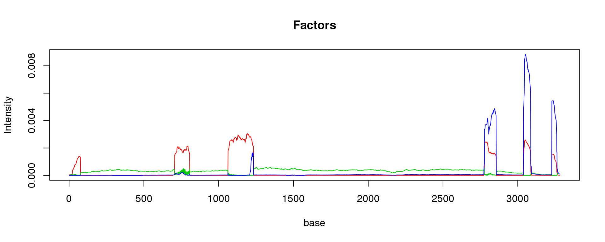
barplot(t(lf$L),col=2:(K+1),axisnames = F, space = 0, border = NA, las = 1, ylim = c(0, 1), cex.axis = 1.5, cex.main = 1.4)
sep_lines = c(226)
sep_lines_mid = c(113,341)
tissue_name=c('Adipose','Skin')
axis(1, at = sep_lines_mid, labels = tissue_name, cex = 2, padj = -1, tick = FALSE)
mtext("tissue", 1, line = 2, cex = 1.2)
mtext("membership proportion", 2, line = 3, cex = 1.2)
abline(v = sep_lines, lwd = 2)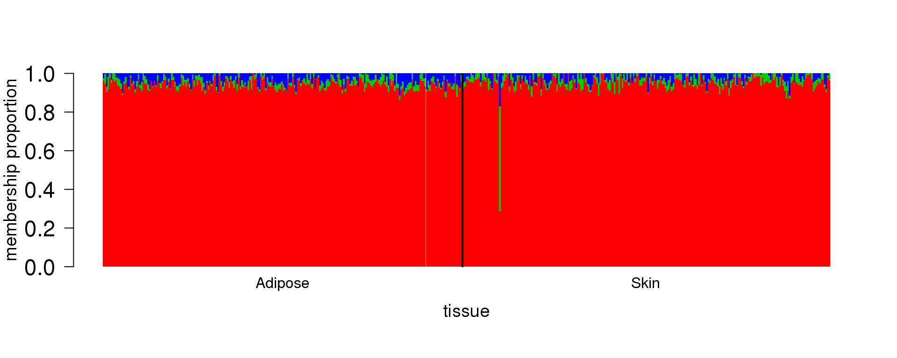
Initialize using above NMF fit, smooth F using BMSM.
load('~/SMF/data/RPS13_stm_bmsm_K3.RData')
lf = poisson2multinom(t(fit_stm$qf),fit_stm$ql)
plot(lf$FF[,1],col=2,ylim=range(lf$FF),type='l',xlab = 'base',ylab='Intensity',main='Factors')
lines(lf$FF[,2],col=3)
lines(lf$FF[,3],col=4)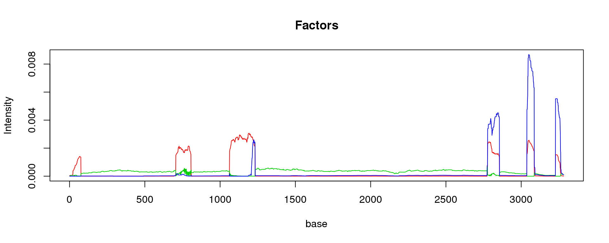
barplot(t(lf$L),col=2:(K+1),axisnames = F, space = 0, border = NA, las = 1, ylim = c(0, 1), cex.axis = 1.5, cex.main = 1.4)
sep_lines = c(226)
sep_lines_mid = c(113,341)
tissue_name=c('Adipose','Skin')
axis(1, at = sep_lines_mid, labels = tissue_name, cex = 2, padj = -1, tick = FALSE)
mtext("tissue", 1, line = 2, cex = 1.2)
mtext("membership proportion", 2, line = 3, cex = 1.2)
abline(v = sep_lines, lwd = 2)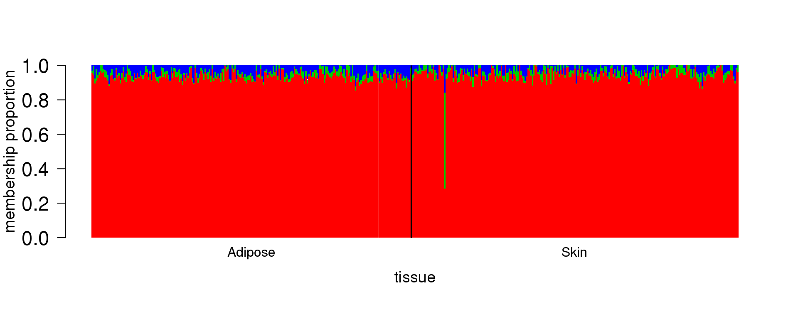
Initialize using above NMF fit, smooth F using smash-gen
load('~/SMF/data/RPS13_stm_nugget_K3.RData')
lf = poisson2multinom(t(fit_stm_nugget$qf),fit_stm_nugget$ql)
plot(lf$FF[,1],col=2,ylim=range(lf$FF),type='l',xlab = 'base',ylab='Intensity',main='Factors')
lines(lf$FF[,2],col=3)
lines(lf$FF[,3],col=4)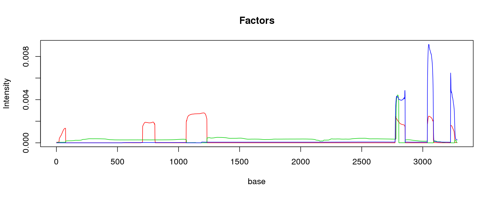
barplot(t(lf$L),col=2:(K+1),axisnames = F, space = 0, border = NA, las = 1, ylim = c(0, 1), cex.axis = 1.5, cex.main = 1.4)
sep_lines = c(226)
sep_lines_mid = c(113,341)
tissue_name=c('Adipose','Skin')
abline(v = sep_lines, lwd = 2)
axis(1, at = sep_lines_mid, labels = tissue_name, cex = 2, padj = -1, tick = FALSE)
mtext("tissue", 1, line = 2, cex = 1.2)
mtext("membership proportion", 2, line = 3, cex = 1.2)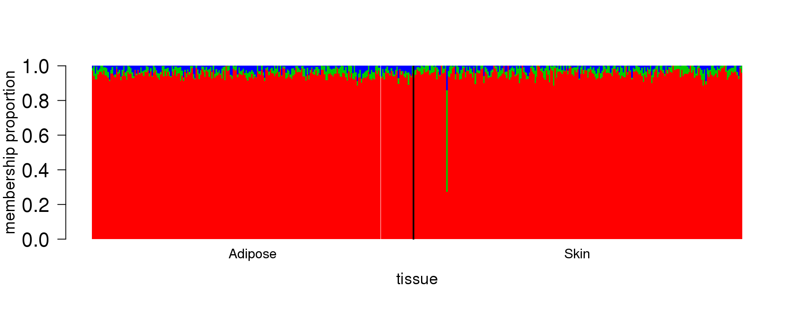
fit_stm_nugget$nugget$nugget_l
[1] 0 0 0
$nugget_f
[1] 0.04586420 0.04107629 0.0493644111 splicing variants, 6 exons
Loss = mean KL divergence
method = lee’s multiplicative update
K=3
load('~/SMF/data/GPX3_NMF_mkl_lee_K3.RData')
lf = poisson2multinom(t(fit_NMF$H),fit_NMF$W)
plot(lf$FF[,1],col=2,ylim=range(lf$FF),type='l',xlab = 'base',ylab='Intensity',main='Factors')
lines(lf$FF[,2],col=3)
lines(lf$FF[,3],col=4)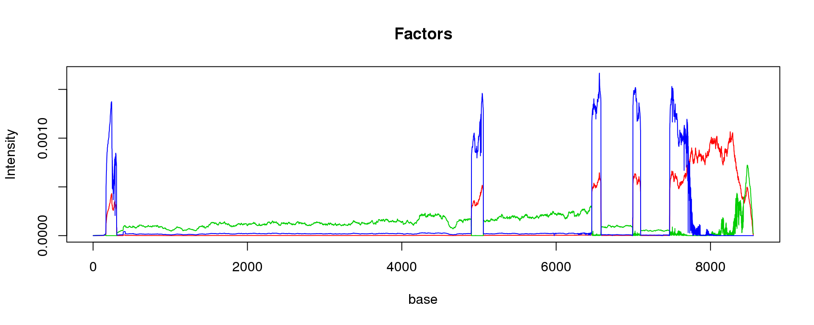
barplot(t(lf$L),col=2:(K+1),axisnames = F, space = 0, border = NA, las = 1, ylim = c(0, 1), cex.axis = 1.5, cex.main = 1.4)
sep_lines = c(226)
sep_lines_mid = c(113,341)
tissue_name=c('Adipose','Skin')
axis(1, at = sep_lines_mid, labels = tissue_name, cex = 2, padj = -1, tick = FALSE)
mtext("tissue", 1, line = 2, cex = 1.2)
mtext("membership proportion", 2, line = 3, cex = 1.2)
abline(v = sep_lines, lwd = 2)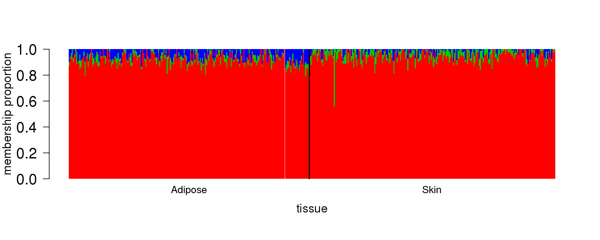
Initialize using above NMF fit, smooth F using BMSM.
load('~/SMF/data/GPX3_stm_bmsm_K3.RData')
lf = poisson2multinom(t(fit_stm$qf),fit_stm$ql)
plot(lf$FF[,1],col=2,ylim=range(lf$FF),type='l',xlab = 'base',ylab='Intensity',main='Factors')
lines(lf$FF[,2],col=3)
lines(lf$FF[,3],col=4)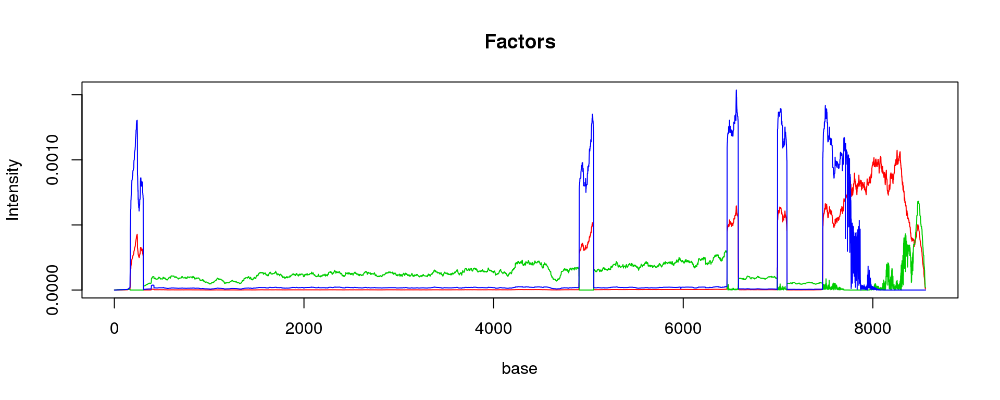
barplot(t(lf$L),col=2:(K+1),axisnames = F, space = 0, border = NA, las = 1, ylim = c(0, 1), cex.axis = 1.5, cex.main = 1.4)
sep_lines = c(226)
sep_lines_mid = c(113,341)
tissue_name=c('Adipose','Skin')
axis(1, at = sep_lines_mid, labels = tissue_name, cex = 2, padj = -1, tick = FALSE)
mtext("tissue", 1, line = 2, cex = 1.2)
mtext("membership proportion", 2, line = 3, cex = 1.2)
abline(v = sep_lines, lwd = 2)Initialize using above NMF fit, smooth F using smash-gen
load('~/SMF/data/GPX3_stm_nugget_K3.RData')
lf = poisson2multinom(t(fit_stm_nugget$qf),fit_stm_nugget$ql)
plot(lf$FF[,1],col=2,ylim=range(lf$FF),type='l',xlab = 'base',ylab='Intensity',main='Factors')
lines(lf$FF[,2],col=3)
lines(lf$FF[,3],col=4)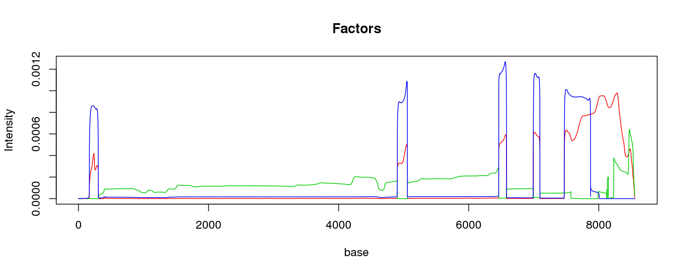
barplot(t(lf$L),col=2:(K+1),axisnames = F, space = 0, border = NA, las = 1, ylim = c(0, 1), cex.axis = 1.5, cex.main = 1.4)
sep_lines = c(226)
sep_lines_mid = c(113,341)
tissue_name=c('Adipose','Skin')
axis(1, at = sep_lines_mid, labels = tissue_name, cex = 2, padj = -1, tick = FALSE)
mtext("tissue", 1, line = 2, cex = 1.2)
mtext("membership proportion", 2, line = 3, cex = 1.2)
abline(v = sep_lines, lwd = 2)fit_stm_nugget$nugget$nugget_l
[1] 0 0 0
$nugget_f
[1] 0.04060634 0.04691368 0.054544636 splicing variants, 15 exons
K=3
load('~/SMF/data/PSAP_NMF_mkl_lee_K3.RData')
lf = poisson2multinom(t(fit_NMF$H),fit_NMF$W)
plot(lf$FF[,1],col=2,ylim=range(lf$FF),type='l',xlab = 'base',ylab='Intensity',main='Factors')
lines(lf$FF[,2],col=3)
lines(lf$FF[,3],col=4)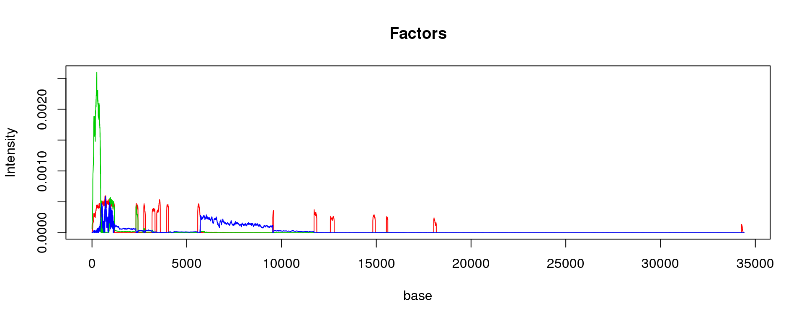
barplot(t(lf$L),col=2:(K+1),axisnames = F, space = 0, border = NA, las = 1, ylim = c(0, 1), cex.axis = 1.5, cex.main = 1.4)
sep_lines = c(226)
sep_lines_mid = c(113,341)
tissue_name=c('Adipose','Skin')
axis(1, at = sep_lines_mid, labels = tissue_name, cex = 2, padj = -1, tick = FALSE)
mtext("tissue", 1, line = 2, cex = 1.2)
mtext("membership proportion", 2, line = 3, cex = 1.2)
abline(v = sep_lines, lwd = 2)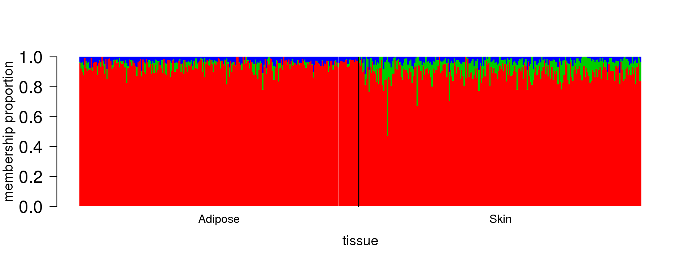
load('~/SMF/data/PSAP_stm_nugget_K3.RData')
lf = poisson2multinom(t(fit_stm_nugget$qf),fit_stm_nugget$ql)
plot(lf$FF[,1],col=2,ylim=range(lf$FF),type='l',xlab = 'base',ylab='Intensity',main='Factors')
lines(lf$FF[,2],col=3)
lines(lf$FF[,3],col=4)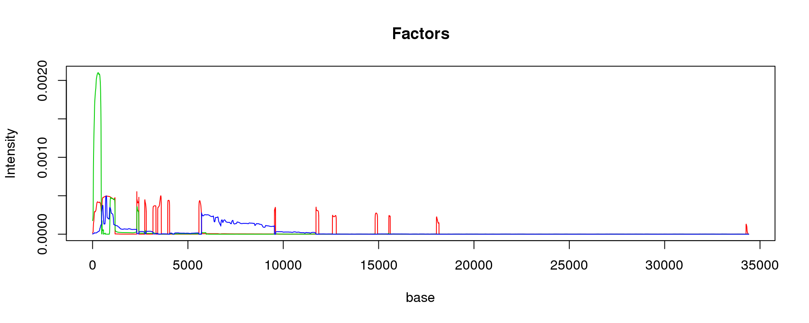
barplot(t(lf$L),col=2:(K+1),axisnames = F, space = 0, border = NA, las = 1, ylim = c(0, 1), cex.axis = 1.5, cex.main = 1.4)
sep_lines = c(226)
sep_lines_mid = c(113,341)
tissue_name=c('Adipose','Skin')
axis(1, at = sep_lines_mid, labels = tissue_name, cex = 2, padj = -1, tick = FALSE)
mtext("tissue", 1, line = 2, cex = 1.2)
mtext("membership proportion", 2, line = 3, cex = 1.2)
abline(v = sep_lines, lwd = 2)fit_stm_nugget$nugget$nugget_l
[1] 0 0 0
$nugget_f
[1] 0.06671526 0.07175778 0.04846421Other findings:
Initialize stm from random cannot find structures
Initialize from NMF with different choices of loss and algorithm give different structures.
sessionInfo()R version 3.5.1 (2018-07-02)
Platform: x86_64-pc-linux-gnu (64-bit)
Running under: Scientific Linux 7.4 (Nitrogen)
Matrix products: default
BLAS/LAPACK: /software/openblas-0.2.19-el7-x86_64/lib/libopenblas_haswellp-r0.2.19.so
locale:
[1] LC_CTYPE=en_US.UTF-8 LC_NUMERIC=C
[3] LC_TIME=en_US.UTF-8 LC_COLLATE=en_US.UTF-8
[5] LC_MONETARY=en_US.UTF-8 LC_MESSAGES=en_US.UTF-8
[7] LC_PAPER=en_US.UTF-8 LC_NAME=C
[9] LC_ADDRESS=C LC_TELEPHONE=C
[11] LC_MEASUREMENT=en_US.UTF-8 LC_IDENTIFICATION=C
attached base packages:
[1] stats graphics grDevices utils datasets methods base
other attached packages:
[1] NNLM_0.4.2 stm_1.0.0
loaded via a namespace (and not attached):
[1] Rcpp_1.0.2 compiler_3.5.1 later_0.7.5
[4] git2r_0.26.1 highr_0.7 workflowr_1.5.0
[7] bitops_1.0-6 iterators_1.0.10 tools_3.5.1
[10] digest_0.6.18 evaluate_0.12 lattice_0.20-38
[13] Matrix_1.2-15 foreach_1.4.4 yaml_2.2.0
[16] parallel_3.5.1 smashr_1.2-7 stringr_1.3.1
[19] knitr_1.20 caTools_1.17.1.1 fs_1.3.1
[22] gtools_3.8.1 rprojroot_1.3-2 grid_3.5.1
[25] data.table_1.12.0 glue_1.3.0 R6_2.3.0
[28] rmarkdown_1.10 mixsqp_0.2-2 ashr_2.2-39
[31] magrittr_1.5 whisker_0.3-2 backports_1.1.2
[34] promises_1.0.1 codetools_0.2-15 htmltools_0.3.6
[37] MASS_7.3-51.1 httpuv_1.4.5 wavethresh_4.6.8
[40] stringi_1.2.4 doParallel_1.0.14 pscl_1.5.2
[43] truncnorm_1.0-8 SQUAREM_2017.10-1 ebpm_0.0.0.9004
[46] logitnorm_0.8.37